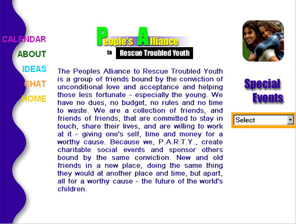

|  |
What I did...
This site was another solo project, meaning I designed the layout, made the graphics, and wrote the HTML code in 2000. "Frames" were used heavily in this site. The example is actually three column frames and two row frames. |
©Graphic design and programming by Walter VanderHeide®,
see resume for contact details.
Last modified: May 30, 2000